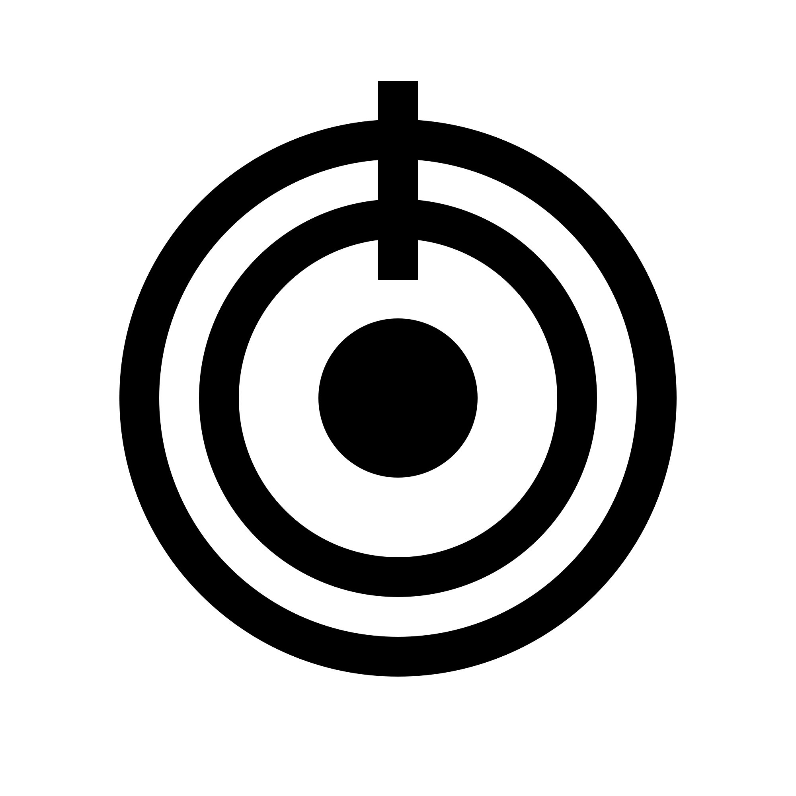

José Duarte
I am currently working as a full-stack developer for Dystematic, in my free time, I maintain and collaborate on open-source projects.
My research/work interests revolve around programming languages, high-performance computing, distributed systems and cybersecurity.
Work Experience
Dystematic Ltd.
Full-stack Developer - September 2021 / Present- Developing a distributed job processing system.
Open Source Contributor
Several projects - Since 2018- Foam - a personal knowledge management system for VSCode.
- Novathesis - LaTeX template for MSc and PhD thesis.
- #[typestate] - a procedural macro typestate DSL for Rust.
- #[sealed] - a procedural macro implementing the sealed trait pattern.
- #[pseudonym] - a procedural macro allowing declaring aliases with ease.
NOVA-FCT / NOVALINCS
MSc Thesis / Research Project - October 2020 / September 2021- Researched the integration of typestates in Rust.
- Developed an embedded DSL for Rust, using procedural macros.
- Published a paper in the SBLP'21 conference.
- Partnership with IPMA.
- Hands-on experience with CUDA.
- Developed a simulation model for the Fire Weather Index.
RootLee Capture The Flag Team
Co-Founder, Team Captain & Player - March 2020 / Present- Overview and organize team participation in the competitions.
- Participated in the CSAW Finals 2020 and ended 4th place in the national rank.
- As a player, I mostly focused on the Web, Crypto and Reversing categories.
FCT NOVA Cybersecurity Group
Co-Founder, Administrator & Speaker - September 2018 / March 2020- Manage the group.
- Host weekly workshops.
Caixa Mágica
Summer Internship - June 2019 / September 2019- Developed an Android library and demo app for the Portuguese Citizen Card.
Personal Tutor
Tutored several students on a variety of CS-related topics - Since 2016- Introduction to Programming - C programming.
- Programming Concepts - introduction to Haskell and functional programming.
- Computer Networks.
Publications
- Retrofitting Typestates into Rust - SBLP'21 [10.1145/3475061.3475082]
Education
Computer Science MSc
NOVA-FCT - September 2015 / September 2021
| Thesis Presentation - Retrofitting Typestates into Rust | 19 |
|---|---|
| Modelação e Validação de Sistemas Concorrentes | 18 |
| Algoritmos e Sistemas Distribuídos | 17 |
| Confiabilidade de Sistemas Distribuídos | 17 |
| Segurança de Redes e Sistemas de Computadores | 17 |
| Redes de Computadores | 17 |
| Arquitetura e Protocolos de Redes de Computadores | 16 |
| Sistemas de Computação em Cloud | 16 |
TU Dresden - September 2018 / March 2019
| Knowledge Graphs | 17 |
|---|---|
| Parallel Programming and High-Performance Computing | 16 |
| Application Development for Mobile and Ubiquitous Computing | 16 |
Professional Skills
Programming Languages
- Java
- Kotlin
- Rust
- Python
- Go
- C
- Bash
Tools & Platforms
- Linux
- Git
- Azure
- Heroku
- Docker
- Maven
- Gradle
Soft Skills
- Teamwork
- Critical thinking
- Eager to learn
- Receptive to feedback
- Open minded
- Detail oriented
Languages
- Portuguese - Native
- English - Proficient
- Spanish - Basic understanding